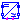
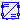
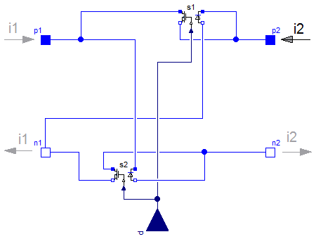
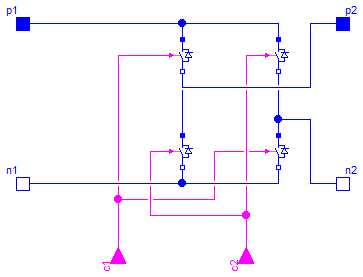
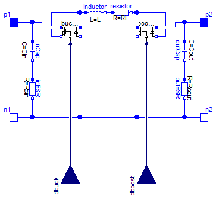
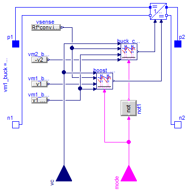

Electrical assemblies useful in PV and power electronics
Information
Extends from PVSystems.Icons.AssembliesPackage (Icon for packages of assemblies).
Package Content
| Name |
Description |
| HBridgeAveraged
|
Basic ideal H-bridge topology (averaged) |
|  HBridgeSwitched
|
Basic ideal H-bridge topology (switched) |
| BidirectionalBuckBoost
|
Bidirectional Buck Boost converter |
|  CPMBidirectionalBuckBoost
|
Bidirectional Buck Boost for battery USB interface |
Basic ideal H-bridge topology (averaged)

Information
This model further
composes IdealAverageCCMSwitch to form a typical H-bridge
configuration from which a 1-phase inverter can be constructed.
This model is based in averaged switch models.
Extends from Interfaces.TwoPortConverter (Common interface for power converters with two ports).
Connectors
| Type | Name | Description |
|---|
| PositivePin | p1 | Positive pin of the left port (potential p1.v > n1.v for positive voltage drop v1) |
| NegativePin | n1 | Negative pin of the left port |
| PositivePin | p2 | Positive pin of the right port (potential p2.v > n2.v for positive voltage drop v2) |
| NegativePin | n2 | Negative pin of the right port |
| input RealInput | d | |
Modelica definition
model HBridgeAveraged
extends Interfaces.TwoPortConverter;
Modelica.Blocks.Interfaces.RealInput d;
CCM1 s1;
CCM1 s2;
equation
connect(s1.p1, p1);
connect(s1.n1, p2);
connect(s2.n1, n1);
connect(s2.p1, n2);
connect(s1.n2, n1);
connect(d, s2.d);
connect(d, s1.d);
connect(s2.p2, p1);
connect(s1.p2, p2);
connect(s2.n2, n2);
end HBridgeAveraged;
Basic ideal H-bridge topology (switched)

Information
This model further
composes IdealTwoLevelBranch to form a typical H-bridge
configuration from which a 1-phase inverter can be constructed.
This model is based on discrete switch models.
Extends from Interfaces.TwoPortConverter (Common interface for power converters with two ports).
Connectors
| Type | Name | Description |
|---|
| PositivePin | p1 | Positive pin of the left port (potential p1.v > n1.v for positive voltage drop v1) |
| NegativePin | n1 | Negative pin of the left port |
| PositivePin | p2 | Positive pin of the right port (potential p2.v > n2.v for positive voltage drop v2) |
| NegativePin | n2 | Negative pin of the right port |
| input BooleanInput | c1 | |
| input BooleanInput | c2 | |
Modelica definition
model HBridgeSwitched
extends Interfaces.TwoPortConverter;
Modelica.Blocks.Interfaces.BooleanInput c1;
Modelica.Blocks.Interfaces.BooleanInput c2;
IdealCBSwitch idealCBSwitch;
IdealCBSwitch idealCBSwitch1;
IdealCBSwitch idealCBSwitch2;
IdealCBSwitch idealCBSwitch3;
equation
connect(c1, idealCBSwitch.c);
connect(c1, idealCBSwitch3.c);
connect(c2, idealCBSwitch2.c);
connect(c2, idealCBSwitch1.c);
connect(p1, idealCBSwitch2.p);
connect(idealCBSwitch.p, idealCBSwitch2.p);
connect(idealCBSwitch1.p, idealCBSwitch.n);
connect(idealCBSwitch2.n, idealCBSwitch3.p);
connect(n1, idealCBSwitch1.n);
connect(idealCBSwitch3.n, idealCBSwitch1.n);
connect(n2, idealCBSwitch3.p);
connect(p2, idealCBSwitch.n);
end HBridgeSwitched;
Bidirectional Buck Boost converter

Information
Bidirectional buck boost converter
Extends from Interfaces.TwoPortConverter (Common interface for power converters with two ports).
Parameters
| Type | Name | Default | Description |
|---|
| Power stage |
| Capacitance | Cin | | Input capacitance [F] |
| Resistance | Rcin | | Series resistance of input capacitor [Ohm] |
| Capacitance | Cout | | Output capacitance [F] |
| Resistance | Rcout | | Series resistance of output capacitor [Ohm] |
| Inductance | L | | Inductance [H] |
| Resistance | RL | | Series resistance of inductor [Ohm] |
| Initialization |
| Voltage | vCin_ini | 0 | Guess for initial voltage of Cin [V] |
| Voltage | vCout_ini | 0 | Guess for initial voltage of Cout [V] |
| Current | iL_ini | 0 | Guess for initial current of L [A] |
| Switches |
| Real | dmax | 1 | Maximum duty cycle [1] |
| Real | dmin | 1e-3 | Minimum duty cycle [1] |
Connectors
| Type | Name | Description |
|---|
| PositivePin | p1 | Positive pin of the left port (potential p1.v > n1.v for positive voltage drop v1) |
| NegativePin | n1 | Negative pin of the left port |
| PositivePin | p2 | Positive pin of the right port (potential p2.v > n2.v for positive voltage drop v2) |
| NegativePin | n2 | Negative pin of the right port |
| input RealInput | dbuck | Buck control voltage |
| input RealInput | dboost | Boost control voltage |
Modelica definition
model BidirectionalBuckBoost
extends Interfaces.TwoPortConverter;
parameter Modelica.SIunits.Capacitance Cin ;
parameter Modelica.SIunits.Resistance Rcin
;
parameter Modelica.SIunits.Capacitance Cout ;
parameter Modelica.SIunits.Resistance Rcout
;
parameter Modelica.SIunits.Inductance L ;
parameter Modelica.SIunits.Resistance RL ;
parameter Modelica.SIunits.Voltage vCin_ini=0
;
parameter Modelica.SIunits.Voltage vCout_ini=0
;
parameter Modelica.SIunits.Current iL_ini=0 ;
parameter Real dmax(
final unit="1") = 1 ;
parameter Real dmin(
final unit="1") = 1e-3 ;
Modelica.Electrical.Analog.Basic.Capacitor outCap(C=Cout, v(start=vCout_ini));
Modelica.Electrical.Analog.Basic.Capacitor inCap(C=Cin, v(start=vCin_ini));
Modelica.Electrical.Analog.Basic.Inductor inductor(L=L, i(start=iL_ini));
Electrical.CCM1 buckSw(dmin=dmin, dmax=dmax);
Electrical.CCM1 boostSw(dmin=dmin, dmax=dmax);
Modelica.Blocks.Interfaces.RealInput dbuck ;
Modelica.Blocks.Interfaces.RealInput dboost ;
Modelica.Electrical.Analog.Basic.Resistor resistor(R=RL);
Modelica.Electrical.Analog.Basic.Resistor inESR(R=Rcin);
Modelica.Electrical.Analog.Basic.Resistor outESR(R=Rcout);
equation
connect(buckSw.n1, inductor.p);
connect(buckSw.p2, inductor.p);
connect(boostSw.n1, buckSw.n2);
connect(boostSw.n2, boostSw.p1);
connect(p1, buckSw.p1);
connect(outCap.p, boostSw.p2);
connect(inCap.p, buckSw.p1);
connect(resistor.n, boostSw.p1);
connect(inductor.n, resistor.p);
connect(p2, boostSw.p2);
connect(inCap.n, inESR.p);
connect(outCap.n, outESR.p);
connect(outESR.n, n2);
connect(inESR.n, n1);
connect(inESR.n, buckSw.n2);
connect(outESR.n, buckSw.n2);
connect(dbuck, buckSw.d);
connect(dboost, boostSw.d);
end BidirectionalBuckBoost;
Bidirectional Buck Boost for battery USB interface

Information
Bidirectional buck boost converter
Extends from Interfaces.TwoPortConverter (Common interface for power converters with two ports).
Parameters
| Type | Name | Default | Description |
|---|
| Power stage |
| Capacitance | Cin | | Input capacitance [F] |
| Capacitance | Cout | | Output capacitance [F] |
| Inductance | L | | Inductance [H] |
| Resistance | RL | | Series resistance of inductor [Ohm] |
| Initialization |
| Voltage | vCin_ini | 0 | Guess for initial voltage of Cin [V] |
| Voltage | vCout_ini | 0 | Guess for initial voltage of Cout [V] |
| Current | iL_ini | 0 | Guess for initial current of L [A] |
| CPM modulator |
| Resistance | Rf | | Equivalent sensing resistance [Ohm] |
| Frequency | fs | | Switching frequency [Hz] |
| Voltage | Va_buck | | Articial ramp amplitude for buck CPM [V] |
| Voltage | Va_boost | | Articial ramp amplitude for boost CPM [V] |
Connectors
| Type | Name | Description |
|---|
| PositivePin | p1 | Positive pin of the left port (potential p1.v > n1.v for positive voltage drop v1) |
| NegativePin | n1 | Negative pin of the left port |
| PositivePin | p2 | Positive pin of the right port (potential p2.v > n2.v for positive voltage drop v2) |
| NegativePin | n2 | Negative pin of the right port |
| input RealInput | vc | Buck control voltage |
| input BooleanInput | mode | Boost control voltage |
Modelica definition
model CPMBidirectionalBuckBoost
extends Interfaces.TwoPortConverter;
parameter Modelica.SIunits.Capacitance Cin ;
parameter Modelica.SIunits.Voltage vCin_ini=0
;
parameter Modelica.SIunits.Capacitance Cout ;
parameter Modelica.SIunits.Voltage vCout_ini=0
;
parameter Modelica.SIunits.Inductance L ;
parameter Modelica.SIunits.Current iL_ini=0 ;
parameter Modelica.SIunits.Resistance RL ;
parameter Modelica.SIunits.Resistance Rf ;
parameter Modelica.SIunits.Frequency fs ;
parameter Modelica.SIunits.Voltage Va_buck
;
parameter Modelica.SIunits.Voltage Va_boost
;
Control.CPM_CCM buck_cpm(
L=L,
Rf=1,
fs=fs,
Va=Va_buck,
d_disabled=1);
Control.CPM_CCM boost_cpm(
L=L,
Rf=1,
fs=fs,
Va=Va_boost,
d_disabled=0);
Modelica.Blocks.Sources.RealExpression vsense(y=Rf*conv.inductor.i);
Modelica.Blocks.Sources.RealExpression vm1_buck(y=v1 - v2);
Modelica.Blocks.Sources.RealExpression vm2_buck(y=-v2);
Modelica.Blocks.Sources.RealExpression vm1_boost(y=v1);
Modelica.Blocks.Interfaces.RealInput vc ;
Modelica.Blocks.Interfaces.BooleanInput mode ;
BidirectionalBuckBoost conv(
Cin=Cin,
Cout=Cout,
L=L,
RL=RL,
vCin_ini=vCin_ini,
vCout_ini=vCout_ini,
iL_ini=iL_ini,
Rcin=1e-3,
Rcout=1e-3,
dmax=1,
dmin=1e-3);
Modelica.Blocks.Logical.Not not1;
equation
connect(conv.p1, p1);
connect(conv.p2, p2);
connect(conv.n2, n2);
connect(conv.n1, n1);
connect(vm2_buck.y, buck_cpm.vm2);
connect(vsense.y, boost_cpm.vs);
connect(vm1_buck.y, boost_cpm.vm2);
connect(vm1_boost.y, boost_cpm.vm1);
connect(vm1_buck.y, buck_cpm.vm1);
connect(vsense.y, buck_cpm.vs);
connect(vc, buck_cpm.vc);
connect(vc, boost_cpm.vc);
connect(mode, not1.u);
connect(mode, boost_cpm.enable);
connect(not1.y, buck_cpm.enable);
connect(boost_cpm.d, conv.dboost);
connect(buck_cpm.d, conv.dbuck);
end CPMBidirectionalBuckBoost;
Automatically generated Wed Apr 19 20:36:11 2017.
 PVSystems.Electrical.Assemblies.HBridgeAveraged
PVSystems.Electrical.Assemblies.HBridgeAveraged